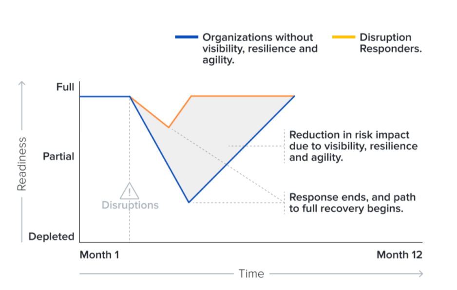
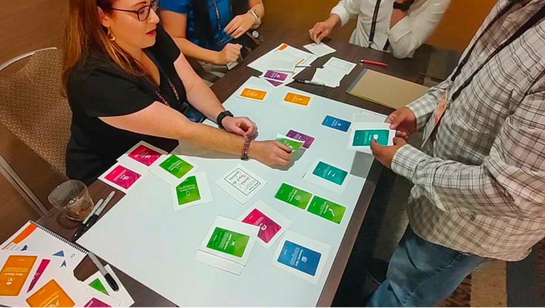
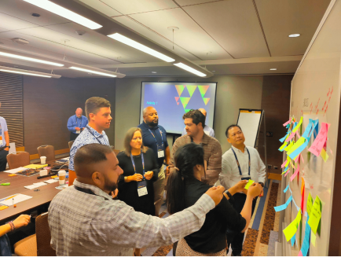
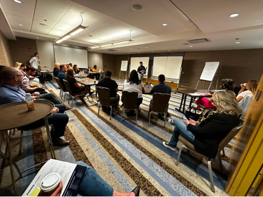
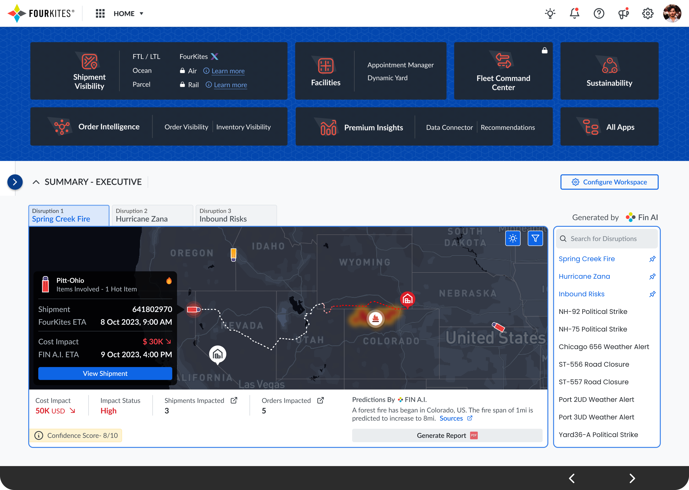
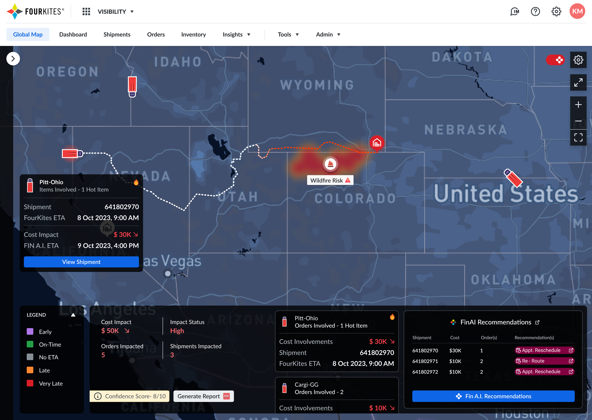

Back to Projects
Uncovering AI Strategies for Disruption Management
How I led organizational transformation to identify and capitalize on AI opportunities, establishing new competitive advantages and revenue streams.
Director of UX · Strategic Orchestrator · Workshop Facilitator · 2 minute read
Strategic challenge
Supply chains face growing unpredictability: natural disasters, strikes, transportation delays, and material shortages often snowball into costly disruptions. Shippers incur detention fees, operators struggle with communication silos, and executives lack visibility into cascading risks. This fragmented approach increased costs, strained supplier relationships, and undermined operational reliability.


My role as Director of UX
- Strategic Orchestrator: Framed the problem beyond UX pain points, positioned disruption management as a business-critical opportunity for AI adoption.
- Workshop Leader: Facilitated a co-creation workshop with 20+ enterprise customers (VP and above), aligning cross-functional leaders on shared pain points and opportunities.
- Design Mentor: Directed my team of designers while integrating insights from Product, Data Science, and Engineering into a unified solution framework.
- Executive Alignment: Partnered with leadership to tie outcomes directly to business KPIs (reduction in detention costs, faster resolution times, improved NPS).
How we unlocked AI potential
- User Journey Mapping: Exposed friction across the supply chain lifecycle, from detection to downstream communication.
- Decision-Making Under Uncertainty: Identified where AI could augment human judgment, such as prioritizing shipments by revenue, customer relationship, or inventory value, not just time.
- AI-Enabled Framework: Explored automation opportunities across:
- Risk detection & probability scoring
- Impact assessment & disruption alerts
- Downstream communication management
From workshop to strategic shifts
- Automated Risk Assessment → AI-driven disruption alerts and probability modeling.
- Priority-Based Recommendations → Shipment prioritization by business value, not just time.
- Data Unification → Reduced silos by integrating third-party and internal sources into a single ecosystem.
- Scalable Notification Framework → Automated communication chains for faster stakeholder response.



Business impact & market positioning
- Positioned AI not as a "feature" but as a strategic lever for supply chain resilience.
- Validated through enterprise co-creation, reducing adoption risk.
- Influenced roadmap by tying AI interventions to measurable business impact: reduced detention, improved reliability, and faster time-to-resolution.
Workshop artifacts
Design artifacts & execution


